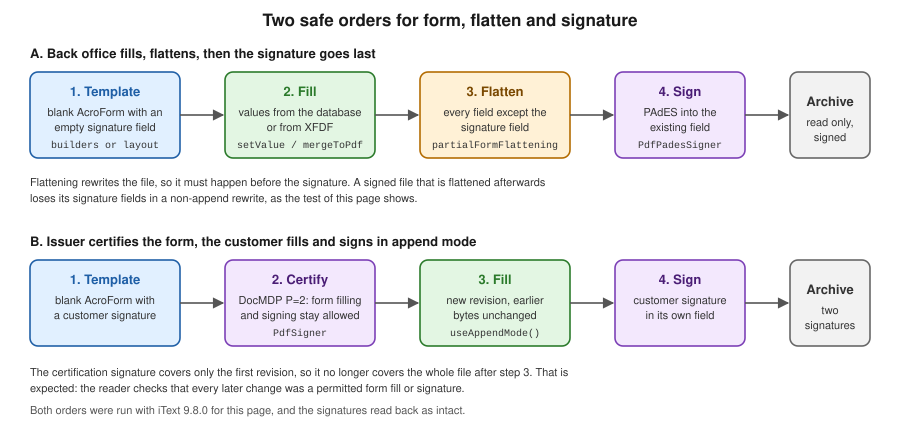

Editable Forms with iText
|
This content was generated with the assistance of AI and should be verified against the official documentation before being relied on in production. |
An editable PDF form is a PDF whose pages carry fields that a person fills in a viewer: text boxes, check boxes, radio
buttons, drop-down lists and a signature box. iText 9 reads, writes and modifies such forms in its forms module, with
two ways to create fields (a set of builder classes and a set of layout elements), one class to fill and flatten them
(PdfAcroForm) and a small XFDF package to exchange the values as XML. This page uses the customer onboarding form
of the Bookshelf Billing service as its running example: the back office produces a blank form, fills in what it
already knows, flattens what must no longer change, and the customer signs the result. Versions are stated as of
2026-10-09: iText Core 9.8.0 with bouncy-castle-adapter 9.8.0 on Java 21. Every Java example on this page was compiled
against exactly those versions and run, and the output shown was produced by that run, except where the text says
otherwise. Nothing was opened in a desktop PDF viewer: the pages were rendered with Apache PDFBox 3.0.8 to check that
the appearances are drawn, and JavaScript actions were therefore not executed.
What a form is, how a field differs from its widget annotation, which flags exist and how appearance streams work, in any library, is explained in Editable PDF Forms: Fundamentals. The same form built with JasperReports and Apache PDFBox is in Editable Forms with JasperReports and PDFBox. Signing is covered in Signing PDFs with iText and the concepts behind it in Digital Signatures: Fundamentals. Opening an existing file in stamping or append mode is explained in Manipulating Existing PDFs, and the document lifecycle that every example relies on in Document Lifecycle.
What changed since AcroFields
Books written for iText 1 and 2, including the 2006 text iText in Action that was consulted for the concept order of
this page and is not reproduced, fill a form with AcroFields obtained from a PdfStamper, and create fields with
static factory methods such as PdfFormField.createTextField(...) or TextField classes that wrap a PdfWriter.
That is finding O10 of this section’s source analysis, and it is outdated in four ways.
-
There is no
AcroFieldsand noPdfStamper. A form is aPdfAcroForm, which you obtain from an openPdfDocument, and a field is aPdfFormFieldor one of its subclasses. Stamping mode isnew PdfDocument(reader, writer). -
The static
PdfFormField.createXxxfactories were replaced in iText 8.0 by the six buildersTextFormFieldBuilder,CheckBoxFormFieldBuilder,RadioFormFieldBuilder,ChoiceFormFieldBuilder,PushButtonFormFieldBuilderandSignatureFormFieldBuilder, and field objects are created throughPdfFormCreator. The iText Knowledge Base article Forms module changes lists the breaking changes of the 8.0 forms module, among them theCheckBoxTypeenum that replaced integer check-mark constants,TextAlignmentfor justification, andButtonwithsetSingleLineValuereplacing the oldInputButton. -
There is a second, higher-level way to make a form: layout elements (
InputField,TextArea,CheckBox,Radio,ComboBoxField,ListBoxField,Button,SignatureFieldAppearance) that are added to aDocumentlike a paragraph, flow with it, and become interactive whensetInteractive(true)is called. -
Flattening is a method of the form,
flattenFields(), with a partial variant,partialFormFlattening(name); there is nosetFormFlattening(true)on a stamper.
The licence is the same as for the rest of iText Core: the forms and sign modules are released under the AGPLv3 or
under a commercial licence, and every example on this page that signs needs the sign module and a Bouncy Castle
adapter, under the same terms. XFA flattening needs a separate commercial-only product, pdfXFA, described at the end of
this page. The AGPLv3 has a network clause that matters for a service that generates and fills forms for users over a
network, so read the iText licensing pages, and ask your legal department, before you build a closed product on this
page.
Setup
Forms need iText Core, which is a POM aggregator that brings in kernel, layout, forms, sign and the other
modules, and exactly one Bouncy Castle adapter for the signing examples (see
iText Architecture and Modules). A page that only
creates and fills forms needs no adapter.
<dependency>
<groupId>com.itextpdf</groupId>
<artifactId>itext-core</artifactId>
<version>9.8.0</version>
<type>pom</type>
</dependency>
<dependency>
<groupId>com.itextpdf</groupId>
<artifactId>bouncy-castle-adapter</artifactId>
<version>9.8.0</version>
</dependency>The signing examples use the shared test PKI of this section: the keystore billing-signer.p12 with the alias
billing-signer, whose certificate was issued by the throwaway CA stored in billing-test-ca.p12, and the environment
variable BILLING_KEYSTORE_PASSWORD for the store password. The complete script that creates them with keytool, and the
class BillingCredentials that loads the private key and the chain from the keystore, are on
Digital Signatures: Fundamentals and
Signing PDFs with iText; this page reuses that class unchanged. In
short, the keystore is created in an empty directory with keytool -genkeypair, keytool -certreq, keytool -gencert
and keytool -importcert, the password is read from the terminal into the environment variable, and the generated files
are never committed. The password is only ever read from the environment: a value such as changeit-placeholder is
acceptable in a throwaway test, never in a repository.
The object model: PdfAcroForm, fields and widgets
A form lives in the /AcroForm entry of the document catalog. iText wraps it in PdfAcroForm, and the wrapper is
obtained from an open PdfDocument with PdfFormCreator.getAcroForm(pdfDocument, createIfNotExist). With true,
a missing form is created, which is what you want when building a new file; with false, the method returns null for a
file that has no form, which is the case the reading examples below must handle. Note that PdfFormCreator lives in the
package com.itextpdf.forms.fields, next to the field classes, and not in com.itextpdf.forms with PdfAcroForm:
import com.itextpdf.forms.fields.PdfFormCreator, because an import of com.itextpdf.forms.PdfFormCreator does not
compile with 9.8.0. PdfAcroForm.getAcroForm(pdfDocument, true) is an equivalent call.
Three kinds of object take part, and the distinction explains most surprises.
-
A field (
PdfFormFieldand subclassesPdfTextFormField,PdfButtonFormField,PdfChoiceFormField,PdfSignatureFormField) holds the name, the type, the value and the flags. Its type is/Tx,/Btn,/Chor/Sig. -
A widget is the annotation that draws the field on a page. iText wraps it in
PdfFormAnnotation. A field normally has one widget, and a radio group has one per choice. -
The appearance stream is the drawing that the widget shows. iText generates it when a value is set, which is why the value of a field and what a viewer shows agree without help.
Field names are hierarchical: a dot in a name splits it into a parent and a child. A field created with the name
customer.name is a field name under a field customer, and getAllFormFields() returns it under its full name
customer.name. This works for filling and reading, and it is the reason that the examples on this page use flat names
such as customerName: in the run for this page the XFDF export of iText 9.8.0 left the three dotted fields of an
earlier version of the form out of the XML, as described in the XFDF section.
Creating fields with the builders
The builders share one pattern: construct with the PdfDocument and the field name, set the widget rectangle and
optionally the font and page, then call the create method that matches the type. The result is a field object that is
configured further and then added to the form with form.addField(field). The field is placed on the page given with
setPage(int) or, by default, on the last page.
The class below builds the blank onboarding form with every field type that the builders offer. The labels are drawn with the low-level canvas (see Low-Level Canvas), because builder fields are positioned by rectangle and do not flow with text.
package com.example.billing;
import com.itextpdf.forms.PdfAcroForm;
import com.itextpdf.forms.fields.CheckBoxFormFieldBuilder;
import com.itextpdf.forms.fields.ChoiceFormFieldBuilder;
import com.itextpdf.forms.fields.PdfButtonFormField;
import com.itextpdf.forms.fields.PdfChoiceFormField;
import com.itextpdf.forms.fields.PdfFormAnnotation;
import com.itextpdf.forms.fields.PdfFormCreator;
import com.itextpdf.forms.fields.PdfSignatureFormField;
import com.itextpdf.forms.fields.PdfTextFormField;
import com.itextpdf.forms.fields.PushButtonFormFieldBuilder;
import com.itextpdf.forms.fields.RadioFormFieldBuilder;
import com.itextpdf.forms.fields.SignatureFormFieldBuilder;
import com.itextpdf.forms.fields.TextFormFieldBuilder;
import com.itextpdf.forms.fields.properties.CheckBoxType;
import com.itextpdf.io.font.constants.StandardFonts;
import com.itextpdf.kernel.colors.ColorConstants;
import com.itextpdf.kernel.font.PdfFont;
import com.itextpdf.kernel.font.PdfFontFactory;
import com.itextpdf.kernel.geom.PageSize;
import com.itextpdf.kernel.geom.Rectangle;
import com.itextpdf.kernel.pdf.PdfDocument;
import com.itextpdf.kernel.pdf.PdfName;
import com.itextpdf.kernel.pdf.PdfPage;
import com.itextpdf.kernel.pdf.PdfWriter;
import com.itextpdf.kernel.pdf.action.PdfAction;
import com.itextpdf.kernel.pdf.canvas.PdfCanvas;
import java.io.ByteArrayOutputStream;
import java.io.IOException;
/** Builds the blank "customer onboarding" AcroForm of Bookshelf Billing with the six field builders. */
public final class OnboardingFormBuilder {
private OnboardingFormBuilder() {
}
public static byte[] build() throws IOException {
ByteArrayOutputStream out = new ByteArrayOutputStream();
try (PdfDocument pdf = new PdfDocument(new PdfWriter(out))) {
PdfPage page = pdf.addNewPage(PageSize.A4);
PdfFont font = PdfFontFactory.createFont(StandardFonts.HELVETICA);
PdfAcroForm form = PdfFormCreator.getAcroForm(pdf, true);
PdfCanvas canvas = new PdfCanvas(page);
canvas.beginText().setFontAndSize(font, 16).moveText(50, 790).showText("Bookshelf customer onboarding").endText();
String[] labels = {"Full name", "Tax identifier", "Billing notes", "Newsletter", "Plan", "Country", "Interests",
"Signature"};
float[] ys = {740, 700, 640, 600, 560, 520, 460, 380};
for (int i = 0; i < labels.length; i++) {
canvas.beginText().setFontAndSize(font, 10).moveText(50, ys[i] + 4).showText(labels[i]).endText();
}
// 1. Single-line text with a maximum length and a required flag.
PdfTextFormField name = new TextFormFieldBuilder(pdf, "customerName")
.setWidgetRectangle(new Rectangle(160, 735, 300, 20)).setFont(font).createText();
name.setMaxLen(60);
name.setRequired(true);
name.setFontSize(11);
form.addField(name);
// 2. Comb field: one character per cell, 9 cells.
PdfTextFormField taxId = new TextFormFieldBuilder(pdf, "customerTaxId")
.setWidgetRectangle(new Rectangle(160, 695, 180, 20)).setFont(font).createText();
taxId.setMaxLen(9);
taxId.setComb(true);
taxId.setFontSize(11);
form.addField(taxId);
// 3. Multiline text.
PdfTextFormField notes = new TextFormFieldBuilder(pdf, "billingNotes")
.setWidgetRectangle(new Rectangle(160, 610, 300, 70)).setFont(font).createMultilineText();
notes.setFontSize(10);
form.addField(notes);
// 4. Check box with an export value.
PdfButtonFormField newsletter = new CheckBoxFormFieldBuilder(pdf, "newsletter")
.setWidgetRectangle(new Rectangle(160, 598, 14, 14)).setCheckType(CheckBoxType.CHECK).createCheckBox();
form.addField(newsletter);
// 5. Radio group: one parent field, one widget per choice.
RadioFormFieldBuilder radios = new RadioFormFieldBuilder(pdf, "plan");
PdfButtonFormField plan = radios.createRadioGroup();
PdfFormAnnotation monthly = radios.createRadioButton("monthly", new Rectangle(160, 558, 14, 14));
PdfFormAnnotation yearly = radios.createRadioButton("yearly", new Rectangle(260, 558, 14, 14));
plan.addKid(monthly);
plan.addKid(yearly);
form.addField(plan);
canvas.beginText().setFontAndSize(font, 10).moveText(178, 562).showText("Monthly").endText();
canvas.beginText().setFontAndSize(font, 10).moveText(278, 562).showText("Yearly").endText();
// 6. Combo box with export value / display value pairs.
PdfChoiceFormField country = new ChoiceFormFieldBuilder(pdf, "country")
.setWidgetRectangle(new Rectangle(160, 515, 180, 20)).setFont(font)
.setOptions(new String[][]{{"ES", "Spain"}, {"FR", "France"}, {"PT", "Portugal"}})
.createComboBox();
country.setFontSize(11);
form.addField(country);
// 7. Multi-select list box.
PdfChoiceFormField interests = new ChoiceFormFieldBuilder(pdf, "interests")
.setWidgetRectangle(new Rectangle(160, 440, 180, 60)).setFont(font)
.setOptions(new String[]{"Novels", "Poetry", "Comics", "Science"}).createList();
interests.setMultiSelect(true);
interests.setFontSize(10);
form.addField(interests);
// 8. Signature field, left empty to be signed later.
PdfSignatureFormField signature = new SignatureFormFieldBuilder(pdf, "customerSignature")
.setWidgetRectangle(new Rectangle(160, 340, 200, 60)).createSignature();
form.addField(signature);
// 9. Push button with a JavaScript action; the PDF reader runs it, iText never does.
PdfButtonFormField reset = new PushButtonFormFieldBuilder(pdf, "resetButton")
.setWidgetRectangle(new Rectangle(400, 340, 80, 24)).setCaption("Reset").setFont(font).createPushButton();
reset.getFirstFormAnnotation().setAction(PdfAction.createResetForm(new String[]{"customerName"}, 0));
form.addField(reset);
// JavaScript validation (/AA /V) and formatting (/AA /F) of the tax identifier field.
taxId.setAdditionalAction(PdfName.V, PdfAction.createJavaScript(
"if (event.value && !/^[0-9A-Z]{9}$/.test(event.value)) {"
+ " app.alert('Use 9 letters or digits'); event.rc = false; }"));
taxId.setAdditionalAction(PdfName.K, PdfAction.createJavaScript("AFSpecial_Keystroke(0);"));
name.getFirstFormAnnotation().setBorderColor(ColorConstants.GRAY).setBackgroundColor(ColorConstants.WHITE);
}
return out.toByteArray();
}
}Several details deserve a sentence.
-
createText()andcreateMultilineText()differ only in the multiline flag. The comb flag, set withsetComb(true)together withsetMaxLen(n), divides the box intoncells with one character each, which suits tax identifiers and bank codes. -
A check box has one on state and one off state. In the run,
setValue("Yes")selected the check box and the value read back wasYes. The states of a field are available withgetAppearanceStates(); the check mark shape is theCheckBoxTypeenum (CHECK,CIRCLE,CROSS,DIAMOND,SQUARE,STAR). -
A radio group is created in two steps.
createRadioGroup()returns the parent field, andcreateRadioButton(value, rectangle)returns onePdfFormAnnotationper choice, which is attached to the group withaddKid. The export value of each choice is the string passed as its first argument, and setting the group value to it selects that button. The labels next to the buttons are ordinary page content. -
A choice field takes its options as an array of strings, or as an array of pairs of export value and display value. The second form, used for the combo box above, lets the form store
PTwhile the viewer showsPortugal.createComboBox()makes a drop-down list andcreateList()a list box, which becomes multi-selecting withsetMultiSelect(true). -
The signature field is created empty. It is the placeholder that a signing step fills later, and nothing about it depends on a certificate.
-
A push button has a caption and no value. Its behaviour comes from an action. Here
PdfAction.createResetFormclears the name field when the button is clicked in a viewer that runs form actions.
The required, read-only and no-export flags are set with setRequired, setReadOnly and setNoExport. The flag
values are the ones of the PDF specification, summarised in
Editable PDF Forms: Fundamentals. A required field is not
enforced by iText or by the file format: a viewer marks it, and a server that receives the filled form must check it.
The Knowledge Base articles Creating form fields and Forms in iText Core 8.0.0 are the starting points for the builders, and the Java API reference documents TextFormFieldBuilder, SignatureFormFieldBuilder and PdfFormCreator. The class above derives from them.
Fonts and appearance
Every field has a default appearance string that names a font and a size, and every widget has an appearance stream drawn with them. Three rules cover almost all cases.
-
Give the builder a font with
setFont(PdfFont), and a size withsetFontSize(int)on the created field, orsetFontSizeAutoScale()to let iText choose a size that fits. The examples use Helvetica, a standard 14 font that is not embedded and covers only Latin-1 text; Standard 14 fonts are explained in Fonts and Unicode. -
To store and show text outside Latin-1, create the font with
PdfFontFactory.createFontfrom a TrueType file with the encodingPdfEncodings.IDENTITY_Hand an embedding strategy that embeds it, and use it as the field font. That trade-off, and the fonts that a server needs in a Docker image, are in the font page above. -
Colours, borders and captions belong to the widget:
PdfFormAnnotationhassetBackgroundColor,setBorderColor,setBorderWidth,setBorderStyle,setCaptionandsetVisibility, reachable from a field withgetFirstFormAnnotation().PdfFormField#setColorsets the text colour.
iText generates appearance streams whenever a value is set, unless generation is disabled with
form.setGenerateAppearance(false). The older alternative, the form flag NeedAppearances, asks the viewer to draw the
fields itself on opening, and was deprecated in PDF 2.0, so a file that depends on it renders differently in different
viewers and cannot be reliably flattened by a tool. Leave it unset and let iText write the streams.
Creating fields with layout elements
The second API makes a form the way an HTML page is made: the field is an element, the Document places it, and a flag
decides if it is interactive. The same onboarding form, written with layout elements, is below.
package com.example.billing;
import com.itextpdf.forms.fields.properties.CheckBoxType;
import com.itextpdf.forms.form.element.Button;
import com.itextpdf.forms.form.element.CheckBox;
import com.itextpdf.forms.form.element.ComboBoxField;
import com.itextpdf.forms.form.element.InputField;
import com.itextpdf.forms.form.element.ListBoxField;
import com.itextpdf.forms.form.element.Radio;
import com.itextpdf.forms.form.element.SelectFieldItem;
import com.itextpdf.forms.form.element.SignatureFieldAppearance;
import com.itextpdf.forms.form.element.TextArea;
import com.itextpdf.io.font.constants.StandardFonts;
import com.itextpdf.kernel.colors.ColorConstants;
import com.itextpdf.kernel.font.PdfFont;
import com.itextpdf.kernel.font.PdfFontFactory;
import com.itextpdf.kernel.pdf.PdfDocument;
import com.itextpdf.kernel.pdf.PdfWriter;
import com.itextpdf.layout.Document;
import com.itextpdf.layout.borders.SolidBorder;
import com.itextpdf.layout.element.Div;
import com.itextpdf.layout.element.Paragraph;
import java.io.ByteArrayOutputStream;
import java.io.IOException;
/** The same onboarding form, written with the layout form elements that flow like any other element. */
public final class LayoutFormBuilder {
private LayoutFormBuilder() {
}
public static byte[] build() throws IOException {
ByteArrayOutputStream out = new ByteArrayOutputStream();
try (PdfDocument pdf = new PdfDocument(new PdfWriter(out)); Document document = new Document(pdf)) {
PdfFont font = PdfFontFactory.createFont(StandardFonts.HELVETICA);
document.setFont(font).setFontSize(11);
document.add(new Paragraph("Bookshelf customer onboarding").setFontSize(16));
SolidBorder frame = new SolidBorder(ColorConstants.GRAY, 1);
InputField name = new InputField("customerName");
name.setInteractive(true).setWidth(260).setHeight(20);
name.setBorder(frame);
document.add(new Paragraph("Full name")).add(name);
InputField taxId = new InputField("customerTaxId");
taxId.setComb(true).setMaxLen(9);
taxId.setBorder(frame);
taxId.setInteractive(true).setWidth(180).setHeight(20);
document.add(new Paragraph("Tax identifier")).add(taxId);
TextArea notes = new TextArea("billingNotes");
notes.setBorder(frame);
notes.setInteractive(true).setWidth(300).setHeight(60);
document.add(new Paragraph("Billing notes")).add(notes);
CheckBox newsletter = new CheckBox("newsletter");
newsletter.setCheckBoxType(CheckBoxType.CROSS);
newsletter.setSize(14);
newsletter.setBorder(frame);
newsletter.setInteractive(true);
document.add(new Paragraph("Newsletter")).add(newsletter);
Div plans = new Div();
Radio monthly = new Radio("monthly", "plan");
monthly.setSize(14);
monthly.setBorder(frame);
monthly.setInteractive(true);
monthly.setChecked(true);
Radio yearly = new Radio("yearly", "plan");
yearly.setSize(14);
yearly.setBorder(frame);
yearly.setInteractive(true);
plans.add(new Paragraph("Plan: monthly, then yearly")).add(monthly).add(yearly);
document.add(plans);
ComboBoxField country = new ComboBoxField("country");
country.addOption(new SelectFieldItem("ES", "Spain"));
country.addOption(new SelectFieldItem("FR", "France"));
country.addOption(new SelectFieldItem("PT", "Portugal"));
country.setSelected("ES");
country.setBorder(frame);
country.setInteractive(true).setWidth(180).setHeight(20);
document.add(new Paragraph("Country")).add(country);
ListBoxField interests = new ListBoxField("interests", 4, true);
interests.addOption("Novels").addOption("Poetry").addOption("Comics").addOption("Science");
interests.setBorder(frame);
interests.setInteractive(true).setWidth(180).setHeight(64);
document.add(new Paragraph("Interests")).add(interests);
Button print = new Button("printButton");
print.setSingleLineValue("Print");
print.setInteractive(true).setWidth(80).setHeight(24);
document.add(print);
SignatureFieldAppearance signature = new SignatureFieldAppearance("customerSignature");
signature.setContent("Sign here").setFontSize(12);
signature.setBorder(frame);
signature.setInteractive(true).setWidth(200).setHeight(60);
document.add(new Paragraph("Signature")).add(signature);
}
return out.toByteArray();
}
}The call that makes the difference is setInteractive(true). Without it the element is drawn as page content and no field
is created: in the run, a document with one InputField that was not made interactive had an empty list of fields. With
it, iText creates a real field and a widget at the position the layout chose. The element can also take a border, a
background and a font like any other element, which the builder fields set on the widget instead. Without a border
the field is invisible until it has focus, so the example gives every field a thin grey frame. Two details of the API are worth knowing.
-
setInteractivereturns the typeIFormField, not the element class. CallsetSize,setWidth,setHeightand the element-specific setters first, andsetInteractive(true)as its own statement, or the chain no longer compiles. This is why the code above calls them on separate lines. The signature element,SignatureFieldAppearance, creates an empty signature field whose visible content is the text given tosetContent. -
A radio button is
new Radio(id, groupName): the first argument is the export value and the second the name of the group, so the two buttons in the example form one fieldplanwith the valuesmonthlyandyearly.
Reading the layout form back with the function of the filling section below shows the same field names and types as the
builder version. One difference was visible in the run: the combo box was reported with the display text Spain, not with
the export value ES, because the option was added as a SelectFieldItem with a display value. The builder version
reported the export value that was set. Test the value you read back before you depend on either.
Layout elements are the better choice for a form that is a document, with text that flows and breaks over pages, and the
builders for a fixed template whose geometry is decided by a designer. Both produce the same objects, and both can be used
in one document, because the layout elements are added through the same PdfAcroForm. Accessibility of fields is covered in a section below.
JavaScript: validation, format, keystroke and calculation
A PDF form can carry JavaScript that the viewer runs. The scripts are attached to a field through its additional-actions
dictionary (/AA), one script per event: K on every keystroke, F to format the value for display, V to validate a
committed value, and C to calculate the value from other fields. A script can also be the action of a button or of the
document. iText writes these actions with PdfAction.createJavaScript(String) and PdfFormField#setAdditionalAction(PdfName,
PdfAction), as in OnboardingFormBuilder above, where the tax identifier field validates that it holds nine letters or
digits and shows an alert otherwise. iText never runs the script. It is stored as a string and executed by the viewer,
which is why a field validated by JavaScript still has to be validated again on the server.
Calculation needs two things, the script of the calculated field and the order in which calculated fields run, which is
the /CO array of the form. The next class builds an order line where the total is the product of quantity and unit
price, formatted with the standard AFNumber_Format function of the Acrobat JavaScript library.
package com.example.billing;
import com.itextpdf.forms.PdfAcroForm;
import com.itextpdf.forms.fields.PdfFormCreator;
import com.itextpdf.forms.fields.PdfTextFormField;
import com.itextpdf.forms.fields.TextFormFieldBuilder;
import com.itextpdf.io.font.constants.StandardFonts;
import com.itextpdf.kernel.font.PdfFont;
import com.itextpdf.kernel.font.PdfFontFactory;
import com.itextpdf.kernel.geom.PageSize;
import com.itextpdf.kernel.geom.Rectangle;
import com.itextpdf.kernel.pdf.PdfArray;
import com.itextpdf.kernel.pdf.PdfDocument;
import com.itextpdf.kernel.pdf.PdfName;
import com.itextpdf.kernel.pdf.PdfWriter;
import com.itextpdf.kernel.pdf.action.PdfAction;
import java.io.ByteArrayOutputStream;
import java.io.IOException;
/** An order line whose total is computed by the PDF reader with a JavaScript calculate action. */
public final class CalculatedFormBuilder {
private CalculatedFormBuilder() {
}
public static byte[] build() throws IOException {
ByteArrayOutputStream out = new ByteArrayOutputStream();
try (PdfDocument pdf = new PdfDocument(new PdfWriter(out))) {
pdf.addNewPage(PageSize.A4);
PdfFont font = PdfFontFactory.createFont(StandardFonts.HELVETICA);
PdfAcroForm form = PdfFormCreator.getAcroForm(pdf, true);
PdfTextFormField quantity = new TextFormFieldBuilder(pdf, "quantity")
.setWidgetRectangle(new Rectangle(50, 750, 80, 20)).setFont(font).createText();
PdfTextFormField unitPrice = new TextFormFieldBuilder(pdf, "unitPrice")
.setWidgetRectangle(new Rectangle(150, 750, 80, 20)).setFont(font).createText();
PdfTextFormField total = new TextFormFieldBuilder(pdf, "total")
.setWidgetRectangle(new Rectangle(250, 750, 100, 20)).setFont(font).createText();
total.setReadOnly(true);
// Format and keystroke scripts come from the Acrobat JavaScript library of the reader.
unitPrice.setAdditionalAction(PdfName.F, PdfAction.createJavaScript("AFNumber_Format(2, 0, 0, 0, \"\", true);"));
unitPrice.setAdditionalAction(PdfName.K, PdfAction.createJavaScript("AFNumber_Keystroke(2, 0, 0, 0, \"\", true);"));
total.setAdditionalAction(PdfName.C, PdfAction.createJavaScript(
"var q = Number(this.getField('quantity').value);"
+ " var p = Number(this.getField('unitPrice').value);"
+ " event.value = q * p;"));
form.addField(quantity);
form.addField(unitPrice);
form.addField(total);
// Calculation order: the fields whose /AA /C actions run, in that order, whenever a value changes.
form.setCalculationOrder(new PdfArray(total.getPdfObject()));
}
return out.toByteArray();
}
}Running it and reading the form back confirmed that the calculation order array of the form is written (/CO holds one
reference) and that the three fields exist. The calculation itself was not executed, because no viewer was run: whether
a script works depends on the viewer, and the Acrobat JavaScript functions used above are fully supported only by Adobe
Acrobat and Reader. Browsers and other viewers support some or none of them, and corporate readers often disable
JavaScript altogether. Design a form so that it still holds correct data when the scripts do not run, and treat scripts
as a convenience. JavaScript in a PDF is also an attack surface: the Java side must never build a script from
unvalidated user input, for the same reason that SQL is not concatenated, and a form that goes to untrusted readers should
be reviewed by the security team. The reference for the events and the functions is the Adobe documentation on the
Acrobat JavaScript API (its URL has moved, so it is not linked here), and the field-level concepts are in
Editable PDF Forms: Fundamentals.
Filling an existing form
Filling is a stamping operation: open the template with a reader, write the result with a writer, set the values, close. The class below fills, reads back, and flattens the onboarding form with byte arrays, which is what a web service holds.
package com.example.billing;
import com.itextpdf.forms.PdfAcroForm;
import com.itextpdf.forms.fields.PdfChoiceFormField;
import com.itextpdf.forms.fields.PdfFormCreator;
import com.itextpdf.forms.fields.PdfFormField;
import com.itextpdf.kernel.pdf.PdfArray;
import com.itextpdf.kernel.pdf.PdfDocument;
import com.itextpdf.kernel.pdf.PdfObject;
import com.itextpdf.kernel.pdf.PdfReader;
import com.itextpdf.kernel.pdf.PdfWriter;
import java.io.ByteArrayInputStream;
import java.io.ByteArrayOutputStream;
import java.io.IOException;
import java.util.ArrayList;
import java.util.LinkedHashMap;
import java.util.List;
import java.util.Map;
/** Fills, reads back and flattens the onboarding form. All methods work on byte arrays, like a web service would. */
public final class OnboardingFormFiller {
private OnboardingFormFiller() {
}
/** Fills the form in stamping mode: the reader is the template, the writer receives the result. */
public static byte[] fill(byte[] template, Map<String, String> values) throws IOException {
ByteArrayOutputStream out = new ByteArrayOutputStream();
try (PdfDocument pdf = new PdfDocument(new PdfReader(new ByteArrayInputStream(template)), new PdfWriter(out))) {
PdfAcroForm form = PdfFormCreator.getAcroForm(pdf, false);
Map<String, PdfFormField> fields = form.getAllFormFields();
for (Map.Entry<String, String> entry : values.entrySet()) {
PdfFormField field = fields.get(entry.getKey());
if (field == null) {
throw new IllegalArgumentException("No such field: " + entry.getKey());
}
field.setValue(entry.getValue());
}
}
return out.toByteArray();
}
/** Multi-select list boxes take several values through the choice field API. */
public static byte[] selectInterests(byte[] pdfBytes, String... interests) throws IOException {
ByteArrayOutputStream out = new ByteArrayOutputStream();
try (PdfDocument pdf = new PdfDocument(new PdfReader(new ByteArrayInputStream(pdfBytes)), new PdfWriter(out))) {
PdfAcroForm form = PdfFormCreator.getAcroForm(pdf, false);
PdfChoiceFormField list = (PdfChoiceFormField) form.getField("interests");
list.setListSelected(interests);
}
return out.toByteArray();
}
/** Reads every terminal field back as name to value; the signature field is skipped. */
public static Map<String, String> read(byte[] pdfBytes) throws IOException {
Map<String, String> values = new LinkedHashMap<>();
try (PdfDocument pdf = new PdfDocument(new PdfReader(new ByteArrayInputStream(pdfBytes)))) {
PdfAcroForm form = PdfFormCreator.getAcroForm(pdf, false);
if (form == null) {
return values;
}
for (Map.Entry<String, PdfFormField> entry : form.getAllFormFields().entrySet()) {
PdfFormField field = entry.getValue();
values.put(entry.getKey(), valueOf(field) + " [type " + field.getFormType() + "]");
}
}
return values;
}
/** Multi-select list boxes store an array, which getValueAsString does not render. */
private static String valueOf(PdfFormField field) {
PdfObject value = field.getValue();
if (value instanceof PdfArray array) {
List<String> parts = new ArrayList<>();
for (int i = 0; i < array.size(); i++) {
parts.add(array.getAsString(i).toUnicodeString());
}
return String.join(", ", parts);
}
return field.getValueAsString();
}
/** Full flattening: every field becomes page content and the AcroForm disappears. */
public static byte[] flatten(byte[] pdfBytes) throws IOException {
ByteArrayOutputStream out = new ByteArrayOutputStream();
try (PdfDocument pdf = new PdfDocument(new PdfReader(new ByteArrayInputStream(pdfBytes)), new PdfWriter(out))) {
PdfFormCreator.getAcroForm(pdf, false).flattenFields();
}
return out.toByteArray();
}
/** Partial flattening: only the named fields are flattened, the rest stays editable. */
public static byte[] flattenOnly(byte[] pdfBytes, String... fieldNames) throws IOException {
ByteArrayOutputStream out = new ByteArrayOutputStream();
try (PdfDocument pdf = new PdfDocument(new PdfReader(new ByteArrayInputStream(pdfBytes)), new PdfWriter(out))) {
PdfAcroForm form = PdfFormCreator.getAcroForm(pdf, false);
for (String name : fieldNames) {
form.partialFormFlattening(name);
}
form.flattenFields();
}
return out.toByteArray();
}
}The points that matter in practice follow.
-
form.getAllFormFields()returns a map from the full field name to the field, andgetField(name)finds one field. A name that does not exist givesnull, so the code above raises a clear exception instead of aNullPointerExceptiontwo lines later. If the template has no form at all,getAcroForm(pdf, false)returnsnull, and the reader method returns an empty map. -
setValue(String)writes the value and regenerates the appearance. For a check box the argument is the on or off state name (YesorOffhere); for a radio group it is the export value of the choice, and for a combo box the export value. When the value comes from a user, check it against thegetAppearanceStates()of the field or against a whitelist before you set it. -
A multi-select list box stores an array of values, so the string setter is the wrong tool and the string getter shows nothing.
PdfChoiceFormField#setListSelected(String[])selects several options, and the reader above converts the array value to a string by hand.getValueAsString()of the field returned an empty string for the array during the run for this page. -
Filling in stamping mode rewrites the whole file, so a signature that was already in it stops being valid. The section "Forms and signatures" below shows the case that keeps signatures valid, with append mode.
-
Fields are looked up by name, and names are the contract between the template designer and the code. Keep the names in a constant class or in a configuration, check them in a test that opens the template and asserts that every expected name exists, and never rename a field in a published template.
The Knowledge Base explains the same operations in Filling out forms and Get information from a form, and the API of the form is PdfAcroForm. The class above derives from them.
A small driver, shown in the last section of this page, fills the form with the invented customer Lucia Ejemplo and a
fictitious identifier (A00000000, which is not a real tax number of any person). Its output was:
customerName = Lucia Ejemplo [type /Tx]
customerTaxId = A00000000 [type /Tx]
billingNotes = Invoice by email. [type /Tx]
newsletter = Yes [type /Btn]
plan = yearly [type /Btn]
country = PT [type /Ch]
interests = Novels, Comics [type /Ch]
customerSignature = [type /Sig]
resetButton = [type /Btn]Rendering the filled page with PDFBox showed the name and the notes in their boxes, the identifier spread over the nine
comb cells, the check mark, the second radio button selected, the combo box showing Portugal and the two list entries
highlighted.
Reading values back
The reader method above is the answer to "what did the customer fill in": iterate the fields, read the type with
getFormType() (which returns /Tx, /Btn, /Ch or /Sig) and the value with getValueAsString(), with the array
case for multi-select lists. A few observations from the run:
-
A signature field has no string value. It is a placeholder, and the signature itself is read with
SignatureUtil(see the section on signatures). -
A push button reports its type and an empty value.
-
For a text field that was filled by a person in a viewer,
getValueAsString()returns what the viewer stored, which can differ from what was displayed when a format script changed the display.getDisplayValue()returns the displayed text.
Never trust values read from a form without validating them, in the same way that you validate a JSON body: field values are strings from outside, a form can be edited with any tool, and the validation scripts of the form are not enforced.
XFDF: form data as XML
XFDF is the XML format for the field values of a form and for annotations, a sibling of the older FDF. It lets a service
exchange the data without the PDF: the browser or another system sends XFDF, the service merges it into the template. iText
provides it in com.itextpdf.forms.xfdf, with XfdfObjectFactory to create an XfdfObject from a document or from a
stream, and XfdfObject to write it or to merge it into a document.
package com.example.billing;
import com.itextpdf.forms.xfdf.XfdfObject;
import com.itextpdf.forms.xfdf.XfdfObjectFactory;
import com.itextpdf.kernel.pdf.PdfDocument;
import com.itextpdf.kernel.pdf.PdfReader;
import com.itextpdf.kernel.pdf.PdfWriter;
import javax.xml.parsers.ParserConfigurationException;
import javax.xml.transform.TransformerException;
import java.io.ByteArrayInputStream;
import java.io.ByteArrayOutputStream;
import java.io.IOException;
import org.xml.sax.SAXException;
/** XFDF export and import: form data as XML, without the PDF. */
public final class OnboardingXfdf {
private OnboardingXfdf() {
}
public static byte[] export(byte[] pdfBytes, String pdfFileName)
throws IOException, TransformerException, ParserConfigurationException {
try (PdfDocument pdf = new PdfDocument(new PdfReader(new ByteArrayInputStream(pdfBytes)))) {
XfdfObject xfdf = new XfdfObjectFactory().createXfdfObject(pdf, pdfFileName);
ByteArrayOutputStream out = new ByteArrayOutputStream();
xfdf.writeToFile(out);
return out.toByteArray();
}
}
public static byte[] importInto(byte[] templateBytes, byte[] xfdfBytes, String pdfFileName)
throws IOException, ParserConfigurationException, SAXException {
XfdfObject xfdf = new XfdfObjectFactory().createXfdfObject(new ByteArrayInputStream(xfdfBytes));
ByteArrayOutputStream out = new ByteArrayOutputStream();
try (PdfDocument pdf = new PdfDocument(new PdfReader(new ByteArrayInputStream(templateBytes)), new PdfWriter(out))) {
xfdf.mergeToPdf(pdf, pdfFileName);
}
return out.toByteArray();
}
}The factory method createXfdfObject(PdfDocument, String) takes the file name that is written to the f element of the
XFDF, and mergeToPdf(PdfDocument, String) takes the name of the PDF that the data is merged into. XFDF that comes from a client is untrusted input like any XML: keep the library up to date, and validate the
field names and values after the merge.
Two behaviours of iText 9.8.0 were observed in the run for this page and are reported as observed, not as documented
guarantees. First, with the fields named customer.name, customer.taxId and billing.notes in an earlier version of
the form, the exported XFDF contained no entry for them, while the flat names customerName, customerTaxId and
billingNotes were exported, and the merge into a blank template restored them. Second, the multi-select field
interests was exported as an empty element, and the merge did not restore its selection, while single values of text,
check box, radio and combo box fields were round-tripped. If your form needs hierarchical names or multi-select values
in XFDF, test that case and keep the values in your own data format. The Knowledge Base page
XFDF examples shows the operations, and the API reference documents
XfdfObjectFactory.
Flattening: full and partial
Flattening turns the fields into plain page content: the appearance of every widget is drawn onto the page, and the field
and its widget are removed. The result looks the same, can no longer be edited, and is the usual last step before
archiving a filled form or before making it read-only. Two methods of PdfAcroForm do it.
-
flattenFields()flattens every field and removes the form. This is the first of the two methods inOnboardingFormFiller. After it,getAcroForm(pdf, false)returnednull, and the run reported zero fields. -
partialFormFlattening(String name)marks one field for flattening, and the followingflattenFields()then flattens only the marked fields. In the run, flatteningcustomerNameandcountryleft the other seven fields, including the signature field and the push button, in the form. The Knowledge Base article How to tell iText which fields to flatten explains the second method, and the full operation is in Flattening a form.
Four facts about flattening cost people time.
-
The flattened content is the appearance stream. A field with no stream, or with a stream that a viewer regenerates, flattens to nothing, so set the values with iText, which writes the streams, before flattening.
-
Buttons are flattened too: in the run the Reset button stayed on the page as a grey rectangle with its caption, without its action.
-
A signature field is removed by a full flatten. After
flattenFields()on the filled form the signature field had gone, so a flow that needs a signature field afterwards must either flatten all the other fields withpartialFormFlatteningand keep the signature field, or let the signer create the field. -
Flattening rewrites the file. It must happen before any signature, and the next section shows what happens when it does not.
Forms and signatures
A form that is returned signed has two operations that rewrite the file, filling and flattening, and one that must not be followed by any rewrite, signing. The figure shows the two orders that work, which are the two flows this section builds.

Order A, fill then flatten then sign. The back office fills the form with data it already has, flattens every field except
the signature field, and signs the empty signature field with a PAdES B-B signature. The class FormSigner below does the
flattening and the signing; it takes a BillingCredentials as in
Signing PDFs with iText, and uses the PdfPadesSigner high-level
API with the field name of the existing field. Passing the name of the existing
signature field to SignerProperties.setFieldName signed that field in the run, and no blank signature was left. The same class also contains the second order.
Order B, certify then fill then sign. The issuer certifies the blank form with a certification signature that permits
form filling (DocMDP with P=2, AccessPermissions.FORM_FIELDS_MODIFICATION), so that the customer can fill the form and
sign without invalidating the certification. The filling must then happen in append mode, which adds a revision and leaves
the signed bytes unchanged. DocMDP, the permission levels and what a viewer does with each are in
Digital Signatures: Fundamentals.
package com.example.billing;
import com.itextpdf.forms.PdfAcroForm;
import com.itextpdf.forms.fields.PdfFormCreator;
import com.itextpdf.forms.fields.PdfFormField;
import com.itextpdf.kernel.geom.Rectangle;
import com.itextpdf.kernel.pdf.PdfDocument;
import com.itextpdf.kernel.pdf.PdfName;
import com.itextpdf.kernel.pdf.PdfReader;
import com.itextpdf.kernel.pdf.PdfWriter;
import com.itextpdf.kernel.pdf.StampingProperties;
import com.itextpdf.signatures.AccessPermissions;
import com.itextpdf.signatures.BouncyCastleDigest;
import com.itextpdf.signatures.IExternalSignature;
import com.itextpdf.signatures.PdfPadesSigner;
import com.itextpdf.signatures.PdfSigner;
import com.itextpdf.signatures.PrivateKeySignature;
import com.itextpdf.signatures.SignerProperties;
import org.bouncycastle.jce.provider.BouncyCastleProvider;
import java.io.ByteArrayInputStream;
import java.io.ByteArrayOutputStream;
import java.io.IOException;
import java.security.GeneralSecurityException;
import java.security.Security;
import java.util.ArrayList;
import java.util.Calendar;
import java.util.List;
/** The fill, flatten and sign pipeline of the onboarding form. */
public class FormSigner {
static {
Security.addProvider(new BouncyCastleProvider());
}
private final BillingCredentials credentials;
public FormSigner(BillingCredentials credentials) {
this.credentials = credentials;
}
private IExternalSignature externalSignature() {
return new PrivateKeySignature(credentials.privateKey(), "SHA256", BouncyCastleProvider.PROVIDER_NAME);
}
/** Flattens every field except the signature fields, which must survive to receive the signature. */
public byte[] flattenAllButSignatures(byte[] pdfBytes) throws IOException {
ByteArrayOutputStream out = new ByteArrayOutputStream();
try (PdfDocument pdf = new PdfDocument(new PdfReader(new ByteArrayInputStream(pdfBytes)), new PdfWriter(out))) {
PdfAcroForm form = PdfFormCreator.getAcroForm(pdf, false);
List<String> names = new ArrayList<>();
for (PdfFormField field : form.getAllFormFields().values()) {
if (!PdfName.Sig.equals(field.getFormType())) {
names.add(field.getFieldName().toUnicodeString());
}
}
names.forEach(form::partialFormFlattening);
form.flattenFields();
}
return out.toByteArray();
}
/** Signs the existing, empty signature field with a PAdES B-B signature. */
public byte[] signField(byte[] pdfBytes, String fieldName) throws IOException, GeneralSecurityException {
ByteArrayOutputStream out = new ByteArrayOutputStream();
PdfPadesSigner signer = new PdfPadesSigner(new PdfReader(new ByteArrayInputStream(pdfBytes)), out);
SignerProperties properties = new SignerProperties()
.setFieldName(fieldName)
.setReason("Customer onboarding accepted")
.setLocation("Madrid")
.setClaimedSignDate(Calendar.getInstance());
signer.signWithBaselineBProfile(properties, credentials.chain(), externalSignature());
return out.toByteArray();
}
/**
* Certifies the form with DocMDP P=2 in a new invisible signature field, so that later form filling and
* signing of the remaining fields keep the certification valid.
*/
public byte[] certifyAllowingFormFill(byte[] pdfBytes, String fieldName) throws IOException, GeneralSecurityException {
ByteArrayOutputStream out = new ByteArrayOutputStream();
PdfSigner signer = new PdfSigner(new PdfReader(new ByteArrayInputStream(pdfBytes)), out,
new StampingProperties().useAppendMode());
signer.setSignerProperties(new SignerProperties()
.setFieldName(fieldName)
.setReason("Form issued by Bookshelf Billing")
.setClaimedSignDate(Calendar.getInstance())
.setCertificationLevel(AccessPermissions.FORM_FIELDS_MODIFICATION)
.setPageNumber(1)
.setPageRect(new Rectangle(0, 0, 0, 0)));
signer.signDetached(new BouncyCastleDigest(), externalSignature(), credentials.chain(),
null, null, null, 0, PdfSigner.CryptoStandard.CADES);
return out.toByteArray();
}
/** Fills fields of an already signed file. Append mode adds a revision and leaves earlier bytes untouched. */
public static byte[] fillInAppendMode(byte[] signedBytes, String fieldName, String value) throws IOException {
ByteArrayOutputStream out = new ByteArrayOutputStream();
try (PdfDocument pdf = new PdfDocument(new PdfReader(new ByteArrayInputStream(signedBytes)),
new PdfWriter(out), new StampingProperties().useAppendMode())) {
PdfFormCreator.getAcroForm(pdf, false).getField(fieldName).setValue(value);
}
return out.toByteArray();
}
}The names PdfPadesSigner, PdfSigner and SignerProperties and their options are explained in
Signing PDFs with iText, and the four PAdES levels in
PAdES Baseline Levels. A B-T signature would add a timestamp from
https://freetsa.org/tsr, which was not called for this page: the examples above sign at the B-B level, which needs no
network, and the timestamped variants are in the signing page. The class derives from the iText Knowledge Base article
PAdES Signing High Level API.
The driver below runs everything on this page once, with the keystore of the test PKI in the current directory.
package com.example.billing;
import com.itextpdf.kernel.pdf.PdfDocument;
import com.itextpdf.kernel.pdf.PdfReader;
import com.itextpdf.signatures.PdfPKCS7;
import com.itextpdf.signatures.SignatureUtil;
import java.io.ByteArrayInputStream;
import java.nio.file.Files;
import java.nio.file.Path;
import java.util.LinkedHashMap;
import java.util.Map;
/** Runs the whole pipeline once: build, fill, read, XFDF, flatten, sign, certify. Needs BILLING_KEYSTORE_PASSWORD. */
public final class OnboardingDemo {
public static void main(String[] args) throws Exception {
byte[] template = OnboardingFormBuilder.build();
Files.write(Path.of("onboarding-form.pdf"), template);
Map<String, String> values = new LinkedHashMap<>();
values.put("customerName", "Lucia Ejemplo");
values.put("customerTaxId", "A00000000");
values.put("billingNotes", "Invoice by email.");
values.put("newsletter", "Yes");
values.put("plan", "yearly");
values.put("country", "PT");
byte[] filled = OnboardingFormFiller.selectInterests(OnboardingFormFiller.fill(template, values), "Novels", "Comics");
OnboardingFormFiller.read(filled).forEach((name, value) -> System.out.println(name + " = " + value));
byte[] xfdf = OnboardingXfdf.export(filled, "onboarding-filled.pdf");
byte[] fromXfdf = OnboardingXfdf.importInto(template, xfdf, "onboarding-form.pdf");
System.out.println("customerName after XFDF import: " + OnboardingFormFiller.read(fromXfdf).get("customerName"));
byte[] flat = OnboardingFormFiller.flatten(filled);
System.out.println("fields after full flatten: " + OnboardingFormFiller.read(flat).size());
byte[] partial = OnboardingFormFiller.flattenOnly(filled, "customerName", "country");
System.out.println("fields after partial flatten: " + OnboardingFormFiller.read(partial).keySet());
BillingCredentials credentials = BillingCredentials.load(Path.of("billing-signer.p12"), "billing-signer");
FormSigner signer = new FormSigner(credentials);
byte[] signed = signer.signField(signer.flattenAllButSignatures(filled), "customerSignature");
Files.write(Path.of("onboarding-flat-signed.pdf"), signed);
describe("A fill, flatten, sign", signed);
byte[] certified = signer.certifyAllowingFormFill(template, "billingCertification");
byte[] certifiedFilled = FormSigner.fillInAppendMode(certified, "customerName", "Lucia Ejemplo");
byte[] certifiedSigned = signer.signField(certifiedFilled, "customerSignature");
Files.write(Path.of("onboarding-certified-signed.pdf"), certifiedSigned);
describe("B certify, fill, sign", certifiedSigned);
describe("flatten after signing", OnboardingFormFiller.flatten(certifiedSigned));
}
private static void describe(String label, byte[] pdfBytes) throws Exception {
try (PdfDocument pdf = new PdfDocument(new PdfReader(new ByteArrayInputStream(pdfBytes)))) {
SignatureUtil util = new SignatureUtil(pdf);
System.out.println(label + ": signatures " + util.getSignatureNames() + ", blank " + util.getBlankSignatureNames());
for (String name : util.getSignatureNames()) {
PdfPKCS7 data = util.readSignatureData(name);
System.out.println(" " + name + " intact=" + data.verifySignatureIntegrityAndAuthenticity()
+ " coversWholeDocument=" + util.signatureCoversWholeDocument(name));
}
}
}
}With BILLING_KEYSTORE_PASSWORD exported, the second half of its output was:
customerName after XFDF import: Lucia Ejemplo [type /Tx]
fields after full flatten: 0
fields after partial flatten: [customerTaxId, billingNotes, newsletter, plan, interests, customerSignature, resetButton]
A fill, flatten, sign: signatures [customerSignature], blank []
customerSignature intact=true coversWholeDocument=true
B certify, fill, sign: signatures [billingCertification, customerSignature], blank []
billingCertification intact=true coversWholeDocument=false
customerSignature intact=true coversWholeDocument=true
flatten after signing: signatures [], blank []Reading this output:
-
Order A produced one signature that is intact and covers the whole document.
-
Order B produced two signatures, both intact. The certification signature no longer covers the whole file, because the fill and the second signature were appended after it. That is normal, and
signatureCoversWholeDocumentis meant to report it.SignatureUtilchecks the integrity of each signature over its own byte range. It does not decide whether the later changes were permitted by the DocMDP level: that judgement is made by a validating viewer or by a validator such as the one covered in Signature Validation and Long-Term Validity. Open the file in a viewer that evaluates DocMDP before you rely on order B in production. This was not done for this page. -
The last line is the cautionary case. Flattening a signed file in stamping mode, which
OnboardingFormFiller.flattendoes, rewrites the file, and in the run no signature remained in the result: the signature fields were removed with the other fields. Flatten before signing, never after.
The generated test certificates are not trusted by any viewer, so a viewer reports an unknown signer until the CA
certificate exported to billing-test-ca.pem is added to its trust store. Where the real key lives in production, in an
HSM or a key management service, is described in
Remote Signing, HSMs and Deferred Signing and in the
cloud pages on
AWS Secrets Manager and KMS,
Azure Key Vault and
Google Cloud Secret Manager and KMS.
Legacy XFA forms
XFA is an XML-based form technology that was used by Adobe LiveCycle. It is deprecated in PDF 2.0, forbidden by the PDF/A standards, and absent from most viewers other than Adobe’s, so new forms must be AcroForms (finding O14 of this section’s source analysis; see PDF/A and PDF/UA and Editable PDF Forms: Fundamentals). A file can also be a hybrid, with an AcroForm for readers that do not support XFA and an XFA description for those that do.
iText Core has a few methods for XFA. PdfAcroForm#hasXfaForm() reports whether the form has an XFA description,
getXfaForm() returns the XFA wrapper, and removeXfaForm() removes it so that the file keeps its AcroForm only. In the
run for this page hasXfaForm() returned false for the forms built here, and the other two methods were only found in
the API listing: no file with XFA was processed, because none is available to the author. Removing the XFA description
of a hybrid file keeps the AcroForm fields, which in many hybrid files are only a placeholder, so removal is not a way to
recover the content of a dynamic form.
Converting a dynamic XFA form, whose pages exist only as XML, into ordinary pages requires the add-on pdfXFA
(com.itextpdf:pdfxfa, 5.0.8 as of 2026-10-09), which is commercial only, not available under the AGPLv3, and
published from the iText commercial repository at https://repo.itextsupport.com/ and not from Maven Central. The
iText Knowledge Base page Flatten XFA using pdfXFA shows the
call. This page does not reproduce it, because the product was not available for the run. The add-on is described with
the others in iText Add-ons. If the choice is to keep using an old XFA form,
ask the owner of the form for the source and rebuild it as an AcroForm.
Accessibility of fields
An editable form is usable by a person with a screen reader only if every field has a name that the reader announces. In a
PDF that name is the alternative description, stored in the field’s /TU entry. iText sets it with
PdfFormField#setAlternativeName(String) on a builder-made field, with
PdfFormAnnotation#setAlternativeDescription(String) on a widget, and with setAlternativeDescription(String) on a
layout element. A visible label near the field is not enough, because a screen reader does not associate it with the field by
position. A tagged PDF also needs a form structure element for each field, and PDF/UA requires all of this, as explained
in PDF/A and PDF/UA. The general accessibility principles are in
Web Accessibility. A signature field needs a description like any other. Flattening
removes the fields and so the descriptions, and a flattened archive copy needs its own tagging. The run for this page did
not tag the documents or test with a screen reader, so only the existence of the setters was verified.
Putting it in a Spring Boot service
A service that serves forms has three endpoints in practice: one that returns the blank template, one that returns a form
pre-filled for a customer, and one that accepts the filled or signed form. All three work with byte arrays, as the classes
above do, so that the ResponseEntity<byte[]> plumbing described in
Getting Started with Spring Boot applies unchanged.
The REST conventions are in REST APIs. The controller was not written for this
page, so no run is claimed. Four rules are worth following.
-
Build the blank template once, at start-up or in a build step, and keep it in memory or in object storage (see File Storage and Object Stores). A fill is then a cheap stamping pass, and the template can be versioned and signed.
-
Fill from a typed object, not from a free map of names and values, so that a renamed field is a compile error. The map in the demo is for brevity.
-
Validate everything you read back from a returned form (lengths, patterns, enumerations), and compare the values with the template’s expectations, because the form’s own validation is a convenience.
-
Do not log values. A filled form holds personal data, the same as a database row, and its handling falls under the same data-protection rules.
Production notes
-
Memory. A form with thousands of fields, or a document made of many pages with fields on each, is held in memory. Fill and flatten in one pass per document rather than keeping many documents open. The sizing advice of Testing and Performance applies.
-
Field name collisions. Two fields with the same full name are one field with two widgets in PDF, and the forms module has merge strategies for duplicate names (
OnDuplicateFormFieldNameStrategy) for the case where documents are combined. Copying pages that carry fields between documents is covered in Manipulating Existing PDFs. -
Tests. A test that opens the blank template and asserts that every expected field exists, with its type and flags, is cheap and prevents the most common failure, a renamed field. A second test that fills, flattens and extracts the text with the extraction API of Text Extraction and Parsing checks that the values reach the page.
-
Viewers. Test forms in the viewers your customers use. A form that works in one viewer can lose its scripts, fonts or comb layout in another.
-
Licence. Re-read the AGPLv3 and commercial terms of iText whenever the product moves from an internal tool to a service that others use over a network.
Outdated points to avoid
-
AcroFieldsobtained from aPdfStamper, and the staticPdfFormField.createXxxfactories: usePdfAcroForm,PdfFormCreator.getAcroForm, and the six*FormFieldBuilderclasses of iText 8 and later. -
PdfStamper.setFormFlattening(true): callflattenFields()on the form, orpartialFormFlattening(name)for part of it. -
Integer check-mark and alignment constants: use the
CheckBoxTypeenum andTextAlignment. -
InputButtonandFormProperty.FORM_FIELD_VALUEon a button element: useButtonandsetSingleLineValue. -
A layout form element without
setInteractive(true), which is a picture of a field, not a field. -
Relying on
NeedAppearancesso that the viewer draws the fields: deprecated in PDF 2.0, and a flattening tool cannot use it. Let iText write the appearance streams. -
XFA presented as a current technology: deprecated in PDF 2.0, forbidden by PDF/A, flattened with the commercial-only pdfXFA. Build new forms as AcroForms.
-
Flattening or re-filling a form after it was signed, in stamping mode: the signature is lost. Flatten before signing, or fill in append mode under a certification signature that allows it.
-
Trusting JavaScript validation or the required flag as a server-side check: neither is enforced outside a viewer.
-
Hard-coded keystore passwords and key files in the repository: use the environment, a secret store or an HSM.
References
-
iText Knowledge Base, Forms module changes.
-
iText Knowledge Base, Forms in iText Core 8.0.0.
-
iText Knowledge Base, Creating form fields.
-
iText Knowledge Base, Filling out forms.
-
iText Knowledge Base, Flattening a form.
-
iText Knowledge Base, How to tell iText which fields to flatten first.
-
iText Knowledge Base, Get information from a form.
-
iText Knowledge Base, XFDF examples.
-
iText Knowledge Base, Flatten XFA using pdfXFA.
-
iText Knowledge Base, PAdES Signing High Level API.
-
iText Java API, PdfAcroForm, TextFormFieldBuilder, SignatureFormFieldBuilder, PdfFormCreator and XfdfObjectFactory.
-
iText licensing, AGPLv3 licence.
-
PDF Association, ISO 32000-2 (free sponsored access), clause on interactive forms.
-
freetsa.org, free time stamp authority (test use only).
-
Oracle, keytool in JDK 21.
-
In this section: Editable PDF Forms: Fundamentals, Editable Forms with JasperReports and PDFBox, Signing PDFs with iText, Digital Signatures: Fundamentals, PAdES Baseline Levels, Manipulating Existing PDFs, PDF/A and PDF/UA, iText Add-ons and Getting Started with Spring Boot.